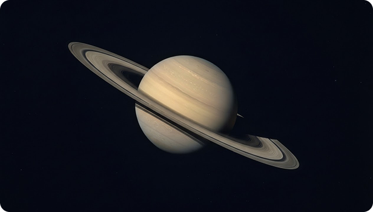

Descubrir / Sistema solar
Un hogar a escala cósmica
Ocho mundos. Una misma estrella.
Viaja desde Mercurio hasta Neptuno y conoce a los pequeños cuerpos que también orbitan alrededor del Sol.
≈ 4.600 millones de años de historia compartida.

Conoce a nuestros vecinos.
Distancias medias al Sol y periodos orbitales aproximados. No representan la separación actual entre planetas.
| Planeta | Tipo | Distancia al Sol | Un año dura | Una pista |
|---|---|---|---|---|
| 01 Mercurio | Rocoso | 0,39 UA | 88 días terrestres | El más cercano al Sol. |
| 02 Venus | Rocoso | 0,72 UA | 225 días terrestres | El planeta más caliente. |
| 03 Tierra | Rocoso | 1 UA | 365,25 días | Nuestro hogar. |
| 04 Marte | Rocoso | 1,52 UA | 687 días terrestres | Un mundo de tonos rojizos. |
| 05 Júpiter | Gigante gaseoso | 5,20 UA | 11,86 años terrestres | El planeta más grande. |
| 06 Saturno | Gigante gaseoso | 9,58 UA | 29,45 años terrestres | Sus anillos lo distinguen. |
| 07 Urano | Gigante helado | 19,2 UA | 84 años terrestres | Gira muy inclinado. |
| 08 Neptuno | Gigante helado | 30,1 UA | 164,8 años terrestres | El planeta más distante. |
UA = unidad astronómica: la distancia media entre la Tierra y el Sol, unos 149,6 millones de kilómetros.
Los otros protagonistas.
Lunas
Satélites naturales que orbitan planetas y otros cuerpos. La nuestra es la Luna.
Asteroides y cometas
Cuerpos de roca o hielo. Muchos asteroides se concentran entre Marte y Júpiter.
Planetas enanos
Mundos como Plutón y Ceres: casi esféricos, pero sin despejar su vecindad orbital.
La luz también necesita tiempo.
≈ 8 min 20 s
del Sol a la Tierra
≈ 4 h 10 min
del Sol a Neptuno
1 UA
unos 149,6 millones de km
Del conocimiento a la experiencia
Ahora, sal a encontrarlos.
Algunos planetas se ven a simple vista. Aprende cuándo y cómo buscarlos.